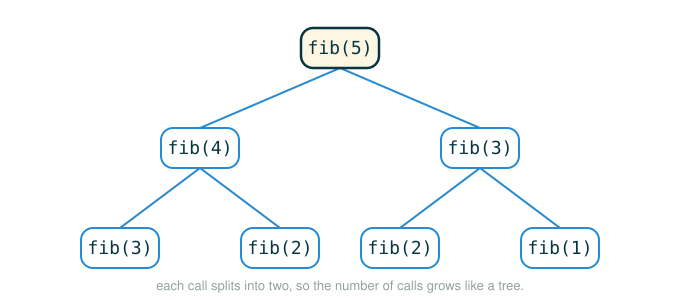

1.7 Recursive Functions: Tree Recursion and Integer Partitions
You already know how to write a recursive function that makes one smaller call to itself. This lesson is about what happens when a single call needs to make two or more smaller calls. By the end you will be able to do four things: recognize when a problem is naturally tree-recursive, read the line fib(n-2) + fib(n-1) and say exactly what the machine does with it, write count_partitions and explain every base case, and see why "split into two choices" is the same idea behind counting Fibonacci numbers, partitions, and ways to make change.
The skill underneath all of it is one move: when a problem asks "how many ways," look for a single decision that splits every possibility into two non-overlapping groups, count each group with a recursive call, and add.
When One Call Branches Into Two
Picture a family tree drawn the usual way, with one person at the top and the lines fanning downward. The top person has two parents. Each of those parents has two parents. Trace it far enough and one name at the top explodes into a wide row of ancestors at the bottom. Nobody planned that explosion; it falls out of the simple rule "each person has two parents" applied over and over.
Tree recursion is exactly that rule written in code. A function that makes a single smaller call produces a straight chain: one problem leads to one slightly smaller problem, down to a base case. A single chain like this is called linear recursion. A function that makes two smaller calls produces a branching shape instead. One problem splits into two subproblems, each of those splits again, and the picture you would draw looks like a tree.
The name is literal, not a metaphor reaching for poetry. The call structure branches the way the branches of a tree become smaller but more numerous the farther they get from the trunk. That branching is the whole subject of this lesson, and it is what makes a certain family of counting problems easy to solve.
A Tiny Branch Before Fibonacci
Before Fibonacci, look at a tree-recursive function with almost no story attached, so the shape is the only thing to notice.
Imagine a hallway where each room splits into two doors. If there are levels rooms left, each door leads to a smaller hallway with one fewer level. If there are 0 levels left, you have reached one finished path. How many finished paths are there?
# (1)
def count_paths(levels):
if levels == 0:
return 1
else:
left_paths = count_paths(levels - 1)
right_paths = count_paths(levels - 1)
return left_paths + right_paths
For count_paths(2), Python sees two smaller calls, and each of those sees two more:
count_paths(2)
count_paths(1) + count_paths(1)
(count_paths(0) + count_paths(0)) + (count_paths(0) + count_paths(0))
(1 + 1) + (1 + 1)
4This example is plain on purpose. It teaches one shape and nothing else:
solve left branch
solve right branch
combine the answersFibonacci uses that exact shape. The only new wrinkle is that its two branches ask for different smaller answers instead of the same one twice.
Fibonacci as the First Real Tree
The Fibonacci sequence begins:
0, 1, 1, 2, 3, 5, 8, ...Each number after the first two is the sum of the two before it. Written as a rule:
That rule already has two pieces being added, which is the signature of tree recursion. Here is a beginner-friendly version that names the two pieces before adding them, so you can see the branching in the code:
# (2)
def fib(n):
if n == 1:
return 0
elif n == 2:
return 1
else:
earlier = fib(n - 2)
later = fib(n - 1)
return earlier + later
The two local names make the two branches obvious: earlier is the result of one smaller call, later is the result of the other, and the function returns their sum.
The original text writes the same function more compactly, returning the sum directly and using a second if rather than elif for the second base case. This is the official version, and it is the one to recognize when you read it elsewhere. The two versions compute exactly the same thing:
# (3)
def fib(n):
if n == 1:
return 0
if n == 2:
return 1
else:
return fib(n-2) + fib(n-1)
result = fib(6)
This recursive definition is appealing because it mirrors the mathematical definition of Fibonacci numbers almost letter for letter. A function with multiple recursive calls is called tree recursive precisely because each call branches into multiple smaller calls, and each of those branches again, just as a tree's branches grow smaller but more numerous as they extend from the trunk.
Drawing the calls for fib(5) makes that branching shape plain: one call at the top splits into two, and each of those splits again.

One honest note for later. You can compute Fibonacci numbers without tree recursion, and those iterative versions are actually more efficient. We will study why in the part of the course about efficiency. Tree recursion earns its place not on Fibonacci, where it is merely elegant, but on the next problem, where the tree-recursive solution is far simpler than any loop you could write.
Follow the Line: The Tree-Recursive Return
The line that makes fib branch is the official return:
return fib(n-2) + fib(n-1)
├─ return ........ hands a single value back to whoever called fib
├─ fib(n-2) ...... first recursive call; computes the earlier Fibonacci number
├─ + ............. waits for both calls, then adds the two returned numbers
├─ fib(n-1) ...... second recursive call; computes the later Fibonacci number
└─ performs returns the sum of the two smaller Fibonacci numbersThe order of operations is the part beginners miss. The + cannot run until both calls on either side of it have returned actual numbers. So a single non-base-case fib frame cannot finish in one step. It has to pause, get one answer, get the other answer, and only then add:
pause the current fib frame
compute fib(n-2) and remember its value
compute fib(n-1) and remember its value
add the two remembered values
return the sumThat forced pause is the mechanical reason tree recursion branches. One frame spawns two separate smaller calls before it is allowed to return, and each of those does the same.
Trace: fib(5)
Working a small case by hand makes the branching concrete. Apply the rule until every leaf is a base case, then add upward:
fib(5)
fib(3) + fib(4)
fib(3)
fib(1) + fib(2)
0 + 1 = 1
fib(4)
fib(2) + fib(3)
1 + (fib(1) + fib(2))
1 + (0 + 1) = 2
fib(5)
1 + 2 = 3Notice that fib(3) shows up twice and gets computed from scratch both times. That is not an error in the trace. Tree recursion routinely recomputes the same smaller answers many times over, which is exactly the inefficiency mentioned above. For now the repetition is fine; the point is the branching logic, not the speed.
Choice Problems: Where Tree Recursion Pays Off
Tree recursion becomes genuinely useful, rather than merely pretty, when a problem splits into choices. The pattern shows up everywhere a count depends on a yes-or-no decision:
use this coin, or do not use it
include this part size, or exclude it
go left, or go right
take the first option, or skip itEach branch handles one category of possibilities. The two categories must not overlap, and together they must cover everything. The final answer is the sum of the two branch counts. Integer partitions is the cleanest example of this idea, so we build it next.
Integer Partitions
A partition of a positive integer is a way to write it as a sum of positive parts in increasing order. The number of partitions of n using parts up to size m is the number of ways n can be written as such a sum where no part exceeds m.
Make it concrete. The number of partitions of 6 using parts up to 4 is 9:
6 = 2 + 4
6 = 1 + 1 + 4
6 = 3 + 3
6 = 1 + 2 + 3
6 = 1 + 1 + 1 + 3
6 = 2 + 2 + 2
6 = 1 + 1 + 2 + 2
6 = 1 + 1 + 1 + 1 + 2
6 = 1 + 1 + 1 + 1 + 1 + 1Counting these by hand is tedious and easy to get wrong, and it gets hopeless as the numbers grow. A loop is awkward to write because the number of parts is not fixed. Tree recursion handles it in a few lines.
The Two-Choice Split
Let count_partitions(n, m) mean: the number of ways to write n using parts no larger than m. The whole solution comes from one observation about the largest allowed part, m. Every partition is in exactly one of two non-overlapping groups:
group 1: the partition uses at least one part equal to m
group 2: the partition uses no part equal to mIf a partition uses at least one m, peel off one m. What remains is a partition of n - m that still may use parts up to m. So group 1 is counted by count_partitions(n - m, m).
If a partition uses no m at all, then its largest allowed part is really m - 1. So group 2 is counted by count_partitions(n, m - 1).
Adding the two groups gives the rule. The number of ways to partition n using parts up to m equals the number of ways to partition n - m using parts up to m, plus the number of ways to partition n using parts up to m - 1:
That is the same "split into two choices and add" move from the choice-problems section, applied to the single decision "do we use a part of size m or not."
Here is a version that names the two branches before adding them, so the two choices are visible in the code:
# (4)
def count_partitions(n, m):
"""Count the ways to partition n using parts up to m."""
if n == 0:
return 1
elif n < 0:
return 0
elif m == 0:
return 0
else:
with_m = count_partitions(n - m, m)
without_m = count_partitions(n, m - 1)
return with_m + without_m
The original text returns the sum directly. This is the official version, identical in behavior, and the one to recognize when you see it:
# (5)
def count_partitions(n, m):
"""Count the ways to partition n using parts up to m."""
if n == 0:
return 1
elif n < 0:
return 0
elif m == 0:
return 0
else:
return count_partitions(n-m, m) + count_partitions(n, m-1)
You can read a tree-recursive function as exploring different possibilities. Here it explores two: the possibility that we use a part of size m, and the possibility that we do not.
Follow the Line: The Partitions Return
The official return line carries both branches:
return count_partitions(n-m, m) + count_partitions(n, m-1)
├─ return ...................... hands one count back to the caller
├─ count_partitions(n-m, m) .... counts partitions that DO use a part of size m
├─ + ........................... waits for both counts, then adds them
├─ count_partitions(n, m-1) .... counts partitions that do NOT use a part of size m
└─ performs returns the total number of partitions across both choicesJust like fib, the + is the last thing to happen. Both recursive counts must come back as real numbers before they can be added, so each non-base-case frame waits on two children before it returns.
Why the Base Cases Are Different
The three base cases are not interchangeable, and each answers a different question about how a branch ended.
n == 0 returns 1. Reaching zero means the target has been filled exactly, with nothing left to place. There is precisely one way to finish from here: add no more parts. An empty completion still counts as one valid partition, which is why this returns 1 and not 0.
n < 0 returns 0. A negative n means a recursive call subtracted a part larger than what was left, overshooting the target. That branch represents an impossible partition, so it contributes nothing.
m == 0 returns 0 (when n is still positive). With no allowed part size above zero, there is no way to build a positive total. That branch is a dead end and contributes nothing.
The order matters too. Python checks n == 0 first, so a partition that lands exactly on zero is counted as a success even if m has also dwindled. Only after ruling out success and overshoot does the code give up because parts ran out.
Verifying by Hand and by Machine
You computed nine partitions of 6 using parts up to 4 above. The function agrees, and the original text checks several larger cases the same way:
>>> count_partitions(6, 4)
9
>>> count_partitions(5, 5)
7
>>> count_partitions(10, 10)
42
>>> count_partitions(15, 15)
176
>>> count_partitions(20, 20)
627The first line is the case you can verify by hand. The rest are far beyond hand-counting, which is the point: once the two-choice rule is correct, the machine extends it to numbers you could never enumerate yourself.
The Same Shape Behind Counting Coins
Counting the ways to make change is the identical tree-recursive shape, dressed in different words. To count the ways to make some amount of change using a largest allowed coin, ask the same single question: do we use a coin of that value, or not?
ways(change, coin)
= ways(change - coin, coin)
+ ways(change, next_smaller_coin(coin))Use one coin of the current value and you still may use that value again, so the first branch keeps the same coin. Stop using that value and you drop to the next smaller coin. The base cases line up with partitions too: exactly making the change is a success worth 1, going below zero is an overshoot worth 0, and running out of coin values with change still owed is a dead end worth 0.
Seeing the two problems share one skeleton is the real lesson. Tree recursion is a general tool for counting over a space of choices, not a special trick that only works for Fibonacci.
⚠Common Beginner Traps
| Mistake | What Goes Wrong | Safer Question |
|---|---|---|
| Missing one branch | The function ignores a whole category of valid possibilities | What are the two mutually exclusive choices here? |
| Branches overlap | Some partitions get counted twice | Does every solution belong to exactly one branch? |
| Wrong success base case | Completed partitions are scored as zero | What condition means the target is exactly filled? |
| Wrong failure base case | Impossible branches are scored as valid | What condition means this branch cannot work? |
| Returning one branch before the other | The second choice never gets counted | Does the answer need the sum of both branches? |
Checking m == 0 before n == 0 |
A partition that lands on zero is wrongly rejected | Is success tested before the dead-end cases? |
✓Check Your Understanding
- Why is
fibtree-recursive rather than the single-chain (linear) recursion you saw earlier? - What does
count_partitions(4, 2)return, and which two branch calls does the top frame add to get it? - Why does
count_partitions(0, m)return1instead of0? - Why does
count_partitionscheckn == 0before it checksm == 0? - How is counting ways to make change structurally the same as
count_partitions?
Show the answers
- A non-base-case call to
fibmakes two recursive calls,fib(n-2)andfib(n-1), so the call structure branches like a tree instead of forming a single chain. - It returns
3. The top frame addscount_partitions(2, 2)(the partitions of4that use a part of size2) andcount_partitions(4, 1)(the partitions of4that use no part of size2); these come back as2and1, and2 + 1 = 3. - Reaching
n == 0means the target is filled exactly, so there is one valid way to finish: add no more parts. An empty completion is itself a partition, which counts as one. - Because a partition that lands exactly on zero is a success and should be counted even if
mhas also reached zero. Testing success first prevents a valid completion from being thrown away as a dead end. - Both rest on a single yes-or-no choice that splits every possibility into two non-overlapping groups. Use the current part or coin and keep it available, or skip it and move to a smaller allowed option; add the two counts. The base cases match: exact completion counts as one, overshoot and running out count as zero.
§Summary
Tree recursion appears whenever one call branches into more than one recursive call, producing a branching shape instead of a straight chain. It is the natural tool for "how many ways" problems, because a single decision can split every possibility into two non-overlapping groups, each counted by its own recursive call and then added. Fibonacci shows the branching shape in its simplest form, where fib(n-2) + fib(n-1) forces a frame to wait on two children before it returns. Integer partitions show why the shape is powerful: the rule count_partitions(n-m, m) + count_partitions(n, m-1) counts a space too large to enumerate by hand, and its three base cases distinguish a completed partition, an overshoot, and a branch with no remaining parts. The same skeleton counts ways to make change, which is the sign that you have learned a general technique rather than a one-off trick.
This closes Chapter 1's main story about processes. You can now describe straight-line computation, name values, define functions, choose with conditionals, repeat with iteration, pass functions around, and build recursive processes that branch. Chapter 2 turns to the next pressure point: once processes become this powerful, they need better things to process. Instead of carrying loose numbers everywhere, we will package information into data abstractions that have meaningful parts and protected interfaces.
▶Step-Through Checkpoint
The block below is the official Fibonacci function with a small driver, so the environment diagram stays readable while still showing the branching. Before you step through it, write down three predictions: how many fib frames will open over the whole run, how many of them will return straight from a base case, and how many of those base-case frames will return 1 rather than 0.
# (6)
def fib(n):
if n == 1:
return 0
if n == 2:
return 1
else:
return fib(n-2) + fib(n-1)
result = fib(5)
Step through it one line at a time and check each count as the frames open and return. Along the way you will see why fib(5) cannot return right away: its return line needs two values, so it waits first for fib(3) and then for fib(4), which opens two children of its own. Each non-base-case frame collects answers from two child calls before it returns its sum. That waiting, stacked up across many frames, is the practical reason the trace looks like a tree rather than a line.